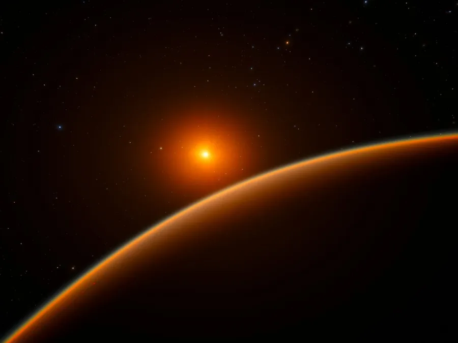

April 19, 2017
LHS 1140 b: a super-Earth in the habitable zone
The MEarth telescopes recorded LHS 1140 b passing in front of its star, a red dwarf 40 light-years away, every 25 days. ESO's HARPS instrument confirmed the discovery and allowed the mass and density to be derived.
According to the measurements at the time, the planet has 1.4 times Earth's diameter and about seven Earth masses, which points to rock with a dense iron core. It is ten times closer to its star than Earth is to the Sun, but receives only about half as much light and lies in the middle of the habitable zone. This makes it a prime target for atmospheric studies.
Source: ESO: "Newly Discovered Exoplanet May be Best Candidate in Search for Signs of Life", 2017-04-19